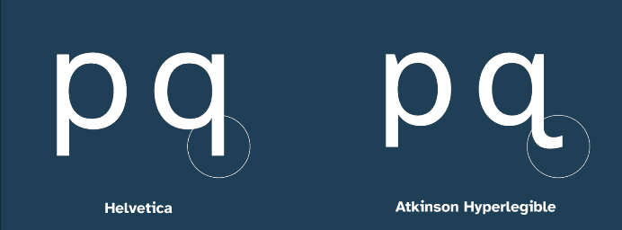
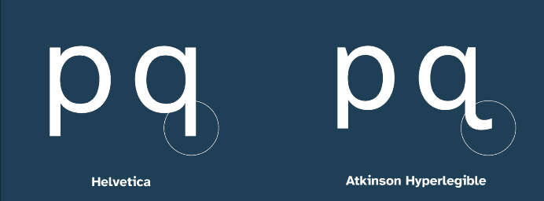

Projects
Applied Design’s first step was to create a limited character set prototype typeface, which incorporated “every legibility trick we knew of”, Scott says. This included combining elements from “many best-in-class legible typefaces”, he adds. One legible typeface the team looked at the humanist school of neo-grotesque san serifs like Frutiger. A couple of “stylistic flourishes” were thrown in for good measure too.
Then the prototype needed to be tested. The BIA conducted the testing, with the help of people with low vision. “They tested each character, as well as words and sentences, to determine the success of our prototype,” says Scott.
The fact the team were not experts in this field was something that needed to be considered throughout, Scott explains. “We knew enough to get started developing a legible typeface, and knew enough to know we didn’t know everything,” he says.
For this reason, the team was “open to feedback” during the development phase and during a public preview phase. “A lot of characters were tweaked, rethought, or even flipped, during the development,” Scott says.
 
